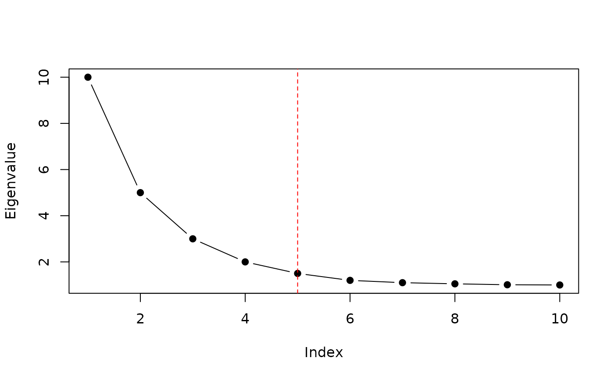

Automatically selects the effective dimensionality from a decreasing eigenvalue sequence. The algorithm log-transforms the eigenvalues, normalizes both axes to the unit interval, draws a straight line between the first and last points, and returns the index of the point with the greatest perpendicular distance from that line. This point corresponds to the "elbow" where the eigenvalue decay transitions from steep to flat.
Value
An integer: the 1-based index of the elbow point. For example, a return value of 5 means the first 5 eigenvalues capture the dominant signal.
Details
MOSAIC calls this function internally at two stages: (1) to choose the per-sample rank from each coupling matrix eigendecomposition, and (2) to choose the global rank from the aggregated projection.
See also
plot_eigen for visualizing eigenvalue spectra.
Examples
# Typical eigenvalue decay with a clear elbow at position 3
eigenvalues <- c(10, 5, 3, 2, 1.5, 1.2, 1.1, 1.05, 1.01, 1.0)
find_elbow_kneedle(eigenvalues)
#> [1] 5
# Returns 3
# Visualize the elbow
plot(eigenvalues, type = "b", pch = 19, xlab = "Index", ylab = "Eigenvalue")
abline(v = find_elbow_kneedle(eigenvalues), col = "red", lty = 2)
